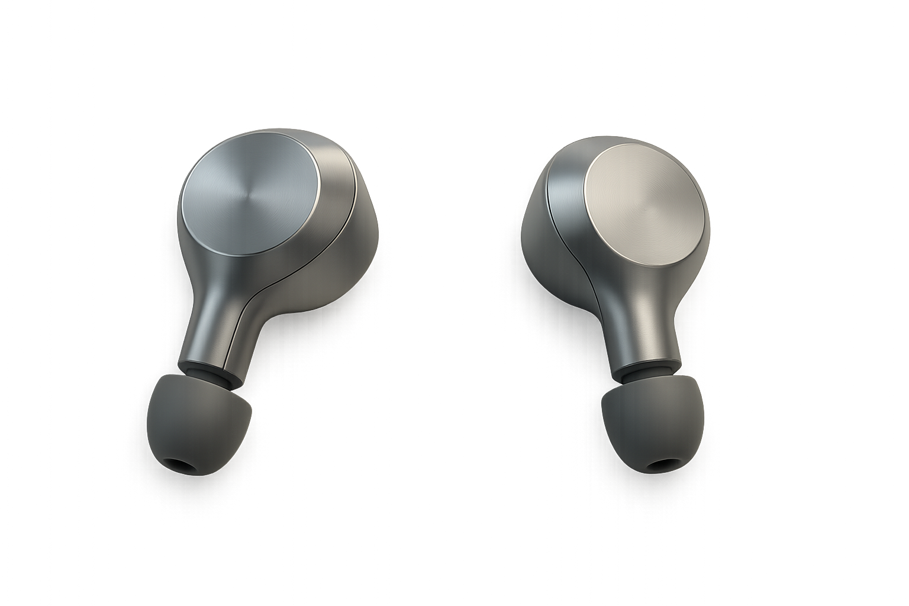
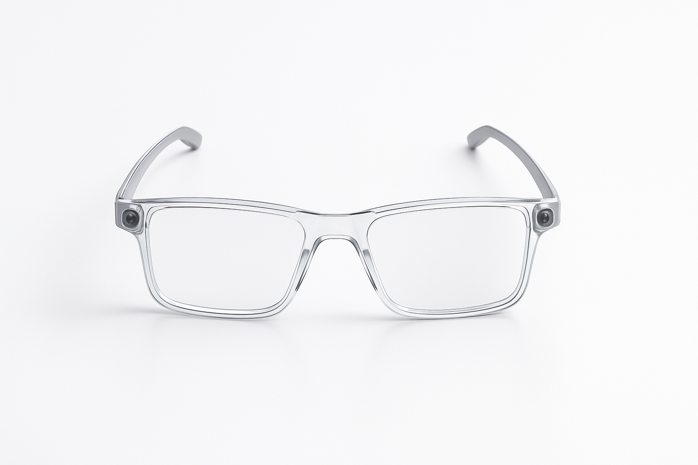

ABOUT
CONTENTS
CAUTION
LOG IN
SIGN UP
발표가 두려운가요?
당신의 성공적인 발표를 위해 혁신적 솔루션을 제안합니다.
보러가기 ↓
(ABOUT)
두려움에서 자신감✓으로,
PRESENTATION MASTER KIT✫가
그 첫걸음을 함께⍆합니다.
PM KIT의 개발 히스토리
⇣
(01)
문제의 인식
발표 공포는 단순한 긴장이 아니라, 구조적인 심리 반응이라는 점을 확인 했습니다. 이를 해결하기 위해 다양한 발표자들의 경험과 심리 메커니즘을 연구하기 시작했습니다.
(02)
데이터
수집과 분석
300건 이상의 실전 발표 사례를 분석하고, 발표 실패와 성공을 가르는 심리적·환경적 패턴을 정리했습니다.
(03)
프로토타입
개발
연구 데이터를 기반으로, 발표 심리 완화에 최적화된 기술을 개발했습니다. 첫 번째 프로토타입을 완성하고, 현장 테스트를 통해 기능을 보완했습니다.
(04)
최적화 및 출시
베타 테스트를 거쳐 사용자 경험을 최종 개선하고, 무게, 착용감, 사운드 퀄리티를 최적화했습니다.
2025년,
발표를 두려워하는 모든 이들을 위한 솔루션,
PRESENTATION MASTER KIT를 공식 출시했습니다.
2025년 5월 1일 오후 1시 오픈 예정
이제,
떨지말고 말하세요!
키트 보러가기
(CONTENTS)
키트 구성을 소개합니다
박수 유도 스피커
최적의 발표자 포즈 추천

청중 투명 안경

AI 발표 시뮬레이터
시선 분산 버튼
박수 유도 스피커
최적의 발표자 포즈 추천
청중 투명 안경
AI 발표 시뮬레이터
시선 분산 버튼
박수 유도 스피커
박수 유도 스피커는 손목시계 형태로 제작된 스피커로, 발표 후 박수소리를 재생하여 발표자의 자신감을 극대화 시키며, 자연스럽게 청중의 박수 갈채를 유도합니다.